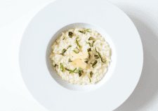

Risotto al fungi
Ingredientes
- 400 gr de arroz arborio o arroz especial para risotto.
- 200 gr de champiñones frescos.
- 1 cebolla grande.
- 1/2 vaso de vino blanco.
- 1,5 litros de caldo de pollo, de verduras o agua (con caldo de pollo se notará más gustoso el arroz, y con agua se notarán más los champiñones). Puedes preparar nuestro caldo de pollo casero para conseguir un plus de sabor.
- 50 gr de queso parmesano o grana padano (rallado o en bloque para rallar).
- Un poco de albahaca fresca o seca para decorar.
- Aceite de oliva, sal y pimienta negra recién molida.
Preparación
- Pela la cebolla y pícala finita con el cuchillo.
- En una olla (mejor si es baja) echa un poco de aceite y sal y ponla a fuego medio. Cuando esté caliente el aceite incorpora la cebolla y ve removiéndola de vez en cuando. Cocínala alrededor de 5 minutos, hasta que esté tierna y ligeramente transparente, mientras preparas los champiñones.
- Córtales la parte de raíces y tierra a los champiñones, límpialos de posibles restos de tierra y pícalos en trocitos aunque procura que no sean muy pequeños ya que es un ingrediente que cocinado pierde mucho volumen. De todas formas hazlo a tu gusto, a mi me gusta encontrarme trozos de champiñones en el risotto pero hay quien prefiere cocinarlo muy picadito.
- Incorpora los champiñones y un poco de pimienta negra molida a la olla y cocina juntos 5 minutos más.
- Ve calentando el caldo o agua que vayas a utilizar ya que hay que ir echándoselo al risotto caliente. Puedes hacerlo en un cazo en el fuego o bien en un recipiente en el microondas, debe estar prácticamente hirviendo o casi. Si utilizas agua deberás echarle un poco de sal y si utilizas caldo, échale sal o no en función de si ya lleva.
- Al cabo de esos 5 minutos sube el fuego para que esté a temperatura alta y vierte el vino blanco. Mantén así el fuego para que se evapore el alcohol, tardará unos 2-3 minutos.
- Ahora vuelve a bajar el fuego para que esté a temperatura media e incorpora el arroz y remuévelo bien junto con el resto de ingredientes durante un par de minutos.
- Ve añadiendo caldo caliente en tandas, una buena medida sería un vaso aunque esto es aproximado (unos 200 o 300 ml cada vez), y cuando el arroz lo haya absorbido casi por completo añade otra medida. La idea es continuar el proceso durante entre 15 y 20 minutos (a veces en el propio paquete del arroz nos indica los minutos que necesita).
- Ve removiendo de vez en cuando el arroz y siempre que le eches caldo o agua debe estar bien caliente. Respecto a la cantidad de líquido, lo estimado es 1,5 litros aunque puede haber variaciones y si tu risotto está antes de gastarlo por completo, no necesita más.
- Cuando lleve unos 15 minutos te recomiendo ir probando el arroz para comprobar el punto. Debe estar jugoso y con el centro hecho, que no se note duro, pero que en ningún caso llegue a estar pasado.
- Cuando ya esté listo incorpora el queso parmesano rallado, apaga el fuego y aparta la olla, mezcla el queso con el risotto, pruébalo por si hay que rectificarlo de sal y tapa la olla para que repose 5 minutos.